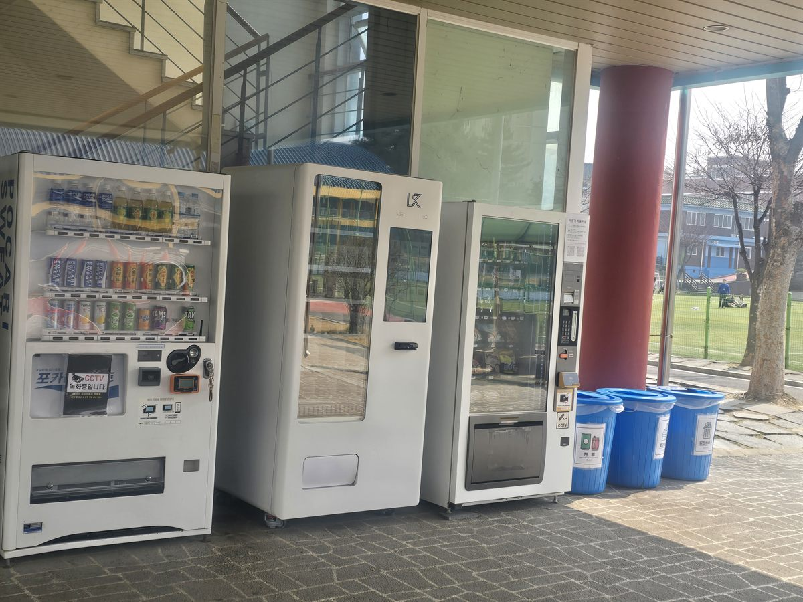

마포구 무인자판기 설치
대학교 운동장 옆 필로티 자판기 3대

대학 캠퍼스는 사람이 몰리는 시간이 하루에 두 번 옵니다. 한 번은 강의가 끝나고 다음 건물로 옮겨 가는 10분이고, 또 한 번은 운동장에서 공을 차고 올라오는 저녁입니다. 두 시간대가 찾는 물건이 서로 다릅니다. 앞쪽은 커피와 탄산이 나가고, 뒤쪽은 생수와 이온음료만 거의 나갑니다. 이번 마포구 현장에서도 그 두 흐름을 한 자리에서 받을 수 있는지부터 봤습니다.
자리는 강의동 필로티 아래였습니다. 지붕은 덮여 있지만 옆이 트여 있는, 실내도 실외도 아닌 반옥외 공간입니다. 운동장에서 올라오는 길목이면서 강의동으로 들어가는 입구를 겸하고 있어, 두 무리가 모두 지나가는 자리였습니다. 이런 자리는 눈에 잘 띄는 대신 바람과 햇빛, 겨울 냉기를 그대로 받기 때문에 기종을 고를 때 기준이 달라집니다.
마포구 대학교 자리에 맞춘 구성
먼저 대수를 늘리는 쪽을 택했습니다. 몰리는 시간이 짧고 한꺼번에 오는 곳이라, 기계 한 대에 품목을 많이 넣는 것보다 여러 대를 나란히 두는 편이 줄을 훨씬 빨리 뺍니다. 음료와 스낵을 다른 기계로 갈라 놓으면 서로 다른 사람이 동시에 결제할 수 있습니다. 가운데 스마트 기종은 화면에서 고르는 방식이라 처음 쓰는 학생도 헤매지 않고, 양옆 기종은 버튼 하나로 끝나서 급한 사람이 그쪽으로 붙습니다.
품목은 생수 비중을 크게 잡았습니다. 운동장을 끼고 있는 자리에서는 생수가 다른 음료를 다 합친 것만큼 나갑니다. 이온음료와 탄산을 그다음 줄에, 캔커피는 강의동 쪽에서 오는 사람을 보고 눈높이에 뒀습니다. 스낵은 한 손으로 들고 걸어가며 먹을 수 있는 개별 포장 위주로 채웠습니다. 결제는 카드와 간편결제 중심이며, 재고와 내부 온도는 관리자 휴대폰으로 확인합니다.
- 기종 — 음료·스마트 냉장·스낵 세 대를 필로티 벽면에 한 줄로
- 음료 — 생수 비중을 가장 크게, 이온음료·탄산·캔커피 순
- 간식 — 걸어가며 먹을 수 있는 개별 포장 위주
- 결제·관리 — 카드·간편결제, 재고와 온도 원격 확인, 분리수거함 동반 설치
캠퍼스에 두고 보니 좋았던 점과 아쉬운 점
좋았던 쪽은 자리 값입니다. 운동장과 강의동을 잇는 길목이라 따로 안내를 붙이지 않아도 알아서 눈에 들어옵니다. 전기는 필로티 기둥 쪽 공용 콘센트에서 끌어올 수 있어 배선 공사가 없었고, 바닥이 평평해 수평을 잡는 데도 오래 걸리지 않았습니다. 한 줄로 세운 덕에 세 대를 한 번에 보충할 수 있어 관리 동선도 짧아졌습니다.
아쉬운 점도 분명합니다. 첫째, 방학에는 사실상 멈춥니다. 학기 중과 방학의 차이가 다른 업종과는 비교가 안 될 만큼 크고, 시험 기간에는 반대로 밤까지 나갑니다. 연간으로 보면 평균이 아니라 굴곡으로 계산해야 합니다. 둘째, 반옥외라 계절을 탑니다. 여름에는 냉장기가 더 오래 돌아 전기가 늘고, 한겨울에는 찬 음료가 눈에 띄게 덜 나갑니다. 셋째, 트인 자리라 비바람이 들이치는 방향을 미리 봐 두어야 합니다. 저희는 기둥이 바람을 막아 주는 안쪽 벽면을 골랐습니다.
마포구, 이런 자리가 잘 됩니다
마포구는 대학과 상권, 사무실이 한 구 안에서 붙어 있는 동네입니다. 상수동과 서교동은 홍익대학교가 있는 대학가라 강의 시간과 상권의 밤 시간이 겹쳐 돌아가고, 신수동·대흥동 쪽에는 서강대학교가 있어 학생 생활권이 이어집니다. 합정동과 망원동은 걸어 다니는 사람이 많은 골목 상권이고, 공덕동과 도화동은 오피스와 아파트가 섞인 업무지구에 가깝습니다. 상암동은 방송·미디어 업무 단지가 모여 있어 성격이 또 다릅니다.
대학이 아니어도 사람이 실내와 실외를 오가고, 그 사이에 가게가 없는 자리면 조건이 비슷합니다. 체육시설과 운동장, 사무동 사이 통로, 큰 건물의 필로티 주차장 입구가 그렇습니다. 반대로 바로 옆에 매점이나 카페가 붙어 있는 건물, 지붕이 없어 기계가 비를 그대로 맞는 자리는 권하지 않습니다.
마포구 서비스 지역
합정동 · 서교동 · 동교동 · 망원동 · 연남동 · 성산동 · 상암동 · 공덕동 · 아현동 · 도화동 · 용강동 · 대흥동 · 염리동 · 신수동 · 서강동 · 중동 · 상수동
마포구 전역에서 방문 상담이 가능합니다. 맞닿은 서대문구·용산구·은평구·영등포구도 같은 담당자가 함께 다닙니다. 지역별 안내는 마포구 무인자판기 설치 안내 페이지에서 보실 수 있습니다.
마포구 무인자판기, 이렇게 시작하시면 됩니다
전화나 상담 신청으로 건물 주소만 남겨 주시면 됩니다. 담당자가 나가서 벽면 길이, 지붕이 덮이는 범위, 콘센트까지의 거리, 사람이 지나는 방향을 확인합니다. 반옥외 자리라면 비가 들이치는 쪽과 겨울 바람 방향을 같이 봅니다. 기종과 품목을 정하고 설치일을 잡으면 끝이며, 설치비는 받지 않습니다. 기계는 구입·렌탈·임대 중에서 고르실 수 있어 초기 비용 없이 시작하셔도 됩니다.
지붕이 없어 기계가 그대로 비를 맞는 자리거나, 방학에 건물이 완전히 비는 구조라면 그 자리에서 솔직히 말씀드립니다. 캠퍼스는 자리보다 학사 일정이 결과를 더 크게 가르는 곳이라, 학기와 방학을 나눠서 계산해 보시는 편이 정확합니다.
※ 사진은 픽프리가 시공한 설치 사례이며, 글에 적힌 지역의 현장 사진은 아닙니다.
함께 많이 찾는 키워드
마포구 무인자판기 · 마포구 자판기 설치 · 마포구 자판기 임대 · 마포구 자판기 렌탈 · 서울 무인자판기 · 서울 자판기 설치 · 상수동 자판기 · 서교동 자판기 · 합정동 자판기 · 망원동 자판기 · 연남동 자판기 · 성산동 자판기 · 상암동 자판기 · 공덕동 자판기 · 아현동 자판기 · 대흥동 자판기 · 신수동 자판기 · 대학교 자판기 · 캠퍼스 자판기 · 운동장 자판기 · 체육관 자판기 · 필로티 자판기 설치 · 냉장 자판기 · 생수 자판기 · 스낵 자판기 · 무인키오스크 설치 · 스마트 자판기 · 카드 자판기 · 자판기 설치비용 · 자판기 원격관리